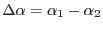
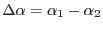

XMM-Newton Science Analysis System
eposcorr (eposcorr-3.12.2) [xmmsas_20170112_1337-16.0.0]
Some spherical geometry
eposcorr
calculates angular distances directly using spherical
trigonometry. In particular the following is used to calculate the angular
distance,  , between two sources (labeled 1 and 2).
, between two sources (labeled 1 and 2).
where  refers to the declination of a source and
, the difference of the right ascension of
the two sources.
refers to the declination of a source and
, the difference of the right ascension of
the two sources.
XMM-Newton SOC/SSC -- 2017-01-12